| Last Modified: 12-09-2025 | 6.11:8.1.0 | Doc ID: RM100000002GQT8 |
| Model Year Start: 2024 | Model: Tacoma | Prod Date Range: [12/2023 - ] |
| Title: PARK ASSIST / MONITORING: PARKING ASSIST MONITOR SYSTEM: DIAGNOSIS SYSTEM; 2024 - 2026 MY Tacoma Tacoma HV [12/2023 - ] | ||
DIAGNOSIS SYSTEM
PARKING ASSIST MONITOR SYSTEM DIAGNOSTIC MODE
(a) In diagnostic mode for the parking assist monitor system, signals received by the radio and display receiver assembly can be checked and the parking assist monitor system can be calibrated, adjusted and checked using the radio and display receiver assembly.
NOTICE:
Depending on the parts that are replaced or operations that are performed during vehicle inspection or maintenance, calibration of other systems as well as the parking assist monitor system may be needed.
Click here
![2024 - 2026 MY Tacoma Tacoma HV [12/2023 - ]; PARK ASSIST / MONITORING: PARKING ASSIST MONITOR SYSTEM: CALIBRATION](../../../../stylegraphics/info.gif)
HINT:
The displayed items may differ depending on vehicle specifications.
DIAGNOSIS SCREEN TRANSITION (DURING PARKING ASSIST MONITOR SYSTEM INITIALIZATION) (w/o Rear Camera Detection Function)
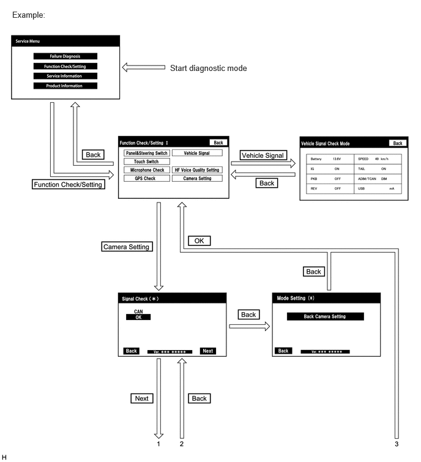 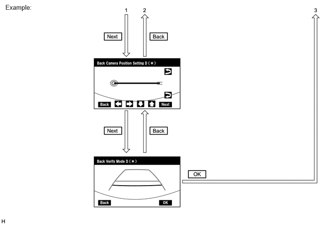DIAGNOSIS SCREEN TRANSITION (AFTER PARKING ASSIST MONITOR SYSTEM INITIALIZATION) (w/o Rear Camera Detection Function)
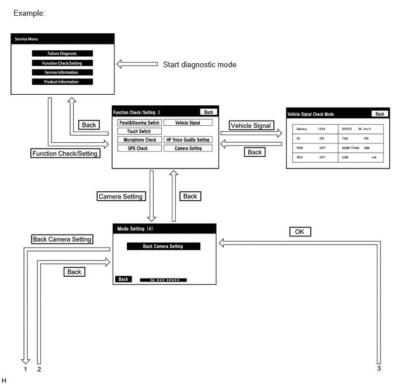 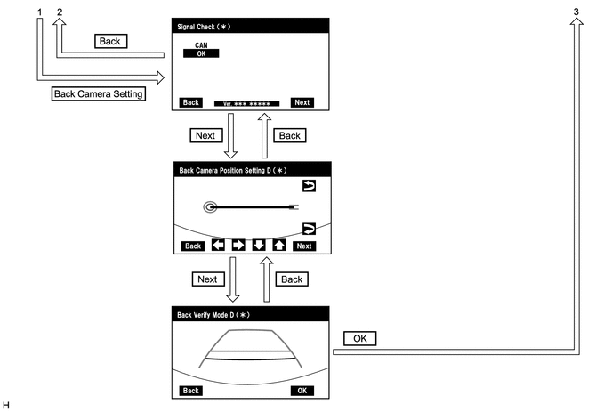DIAGNOSIS SCREEN TRANSITION (DURING PARKING ASSIST MONITOR SYSTEM INITIALIZATION) (w/ Rear Camera Detection Function)
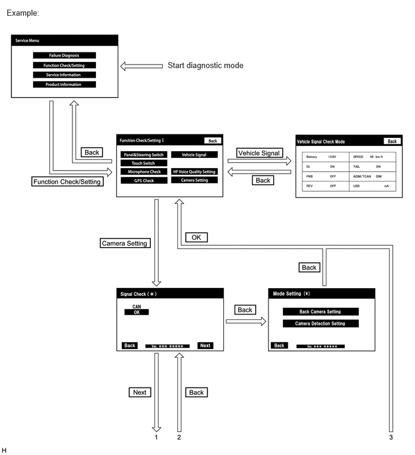 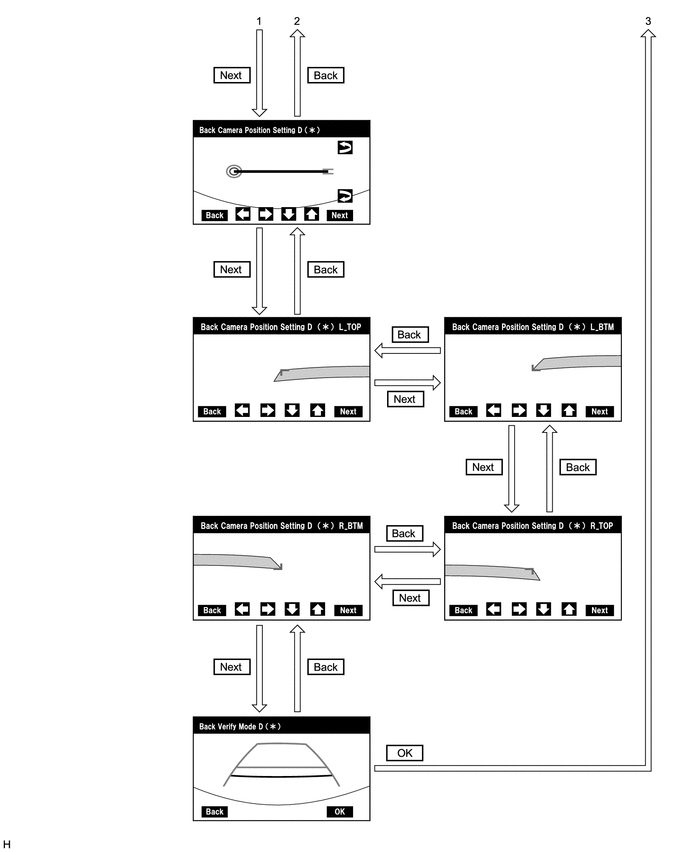DIAGNOSIS SCREEN TRANSITION (AFTER PARKING ASSIST MONITOR SYSTEM INITIALIZATION) (w/ Rear Camera Detection Function)
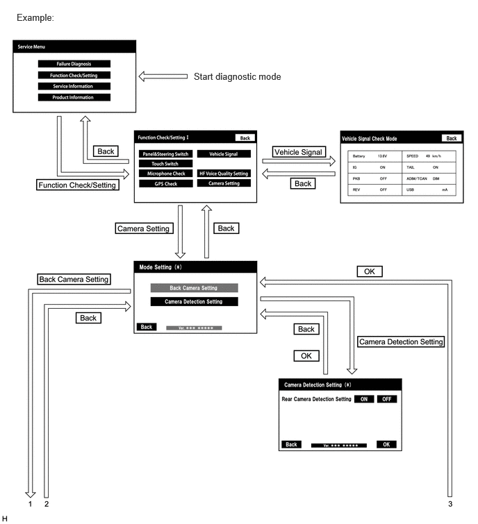 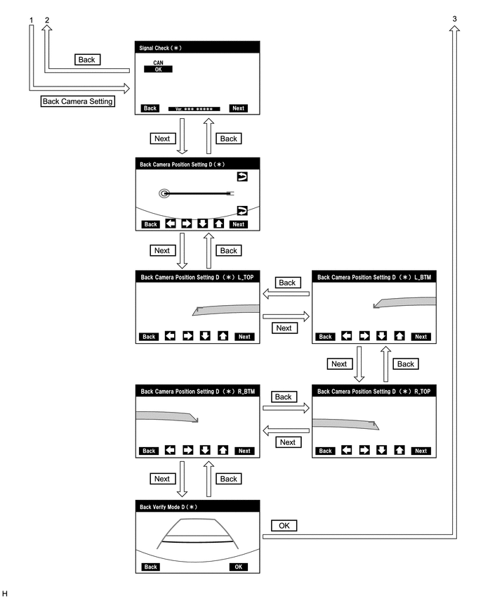VEHICLE SIGNAL CHECK
HINT:
Illustrations may differ from the actual vehicle screen depending on the device settings and options. Therefore, some detailed areas may not be shown exactly the same as on the actual vehicle screen.
(a) Start diagnostic mode.
Click here
(b) Select "Function Check/Setting" on the "Service Menu" screen to display the "Function Check/Setting I" screen.

(c) Select "Vehicle Signal" on the "Function Check/Setting I" screen.
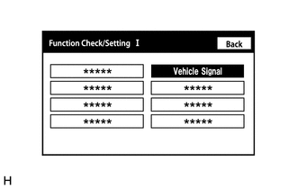(d) Vehicle Signal Check Mode
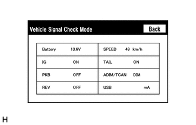(1) When the "Vehicle Signal Check Mode" screen is displayed, check the item displayed for "REV".
Click here
HINT:
- Only conditions having inputs are displayed.
- This screen displays vehicle signals input to the radio and display receiver assembly.
(e) Finish diagnostic mode.
Click here
HINT:
Illustrations may differ from the actual vehicle screen depending on the device settings and options. Therefore, some detailed areas may not be shown exactly the same as on the actual vehicle screen.
SIGNAL CHECK (PARKING ASSIST MONITOR SYSTEM INPUT SIGNALS)
(a) Start diagnostic mode.
Click here
(1) Select "Function Check/Setting" on the "Service Menu" screen to display the "Function Check/Setting I" screen.
(2) Select "Camera Setting" on the "Function Check/Setting I" screen.

NOTICE:
If the "Camera Setting" selection screen is not displayed, turn the ignition switch off and enter the diagnosis screen after turning the ignition switch to ON once again.
HINT:
After "Camera Setting" is selected, the screen transitions differ depending on whether initialization of the parking assist monitor system was performed after the rear television camera assembly was replaced.
|
Parking Assist Monitor System Initialization |
Screen Transition |
|---|---|
|
Not performed |
Signal Check (*) screen |
|
Performed |
Mode Setting (*) screen |
(3) When the screen changes to the "Mode Setting (*)" screen, select "Back Camera Setting" to display the "Signal Check (*)" screen.
HINT:
To select a grayed out item, select and hold the item for 2 seconds or more.

(b) Signal Check

(1) On the "Signal Check (*)" screen, it is possible to inspect the state of signals and check the settings.
|
Item |
Inspection Detail |
Note |
|---|---|---|
|
CAN |
CAN communication signal input |
When "CHK" (red) is displayed, selecting "Next" will not change the screen to the next screen. |
HINT:
- When "CHK" (red) is displayed, perform inspections based on the result of the following inspections.
- If performing the adjustment after proceeding to the next screen, confirm that all items display "OK" (blue) before selecting "Next".
(c) CAN inspection
HINT:
If "CHK" (red) is displayed for "CAN", check for DTCs and perform troubleshooting based on the output DTCs.
(d) Finish diagnostic mode.
Click here
CAMERA DETECTION SETTING (w/ Rear Camera Detection Function)
(a) Start diagnostic mode.
Click here
(1) Select "Function Check/Setting" on the "Service Menu" screen to display the "Function Check/Setting I" screen.
(2) Select "Camera Setting" on the "Function Check/Setting I" screen.
(3) Select "Camera Detection Setting" on the "Mode Setting " screen.
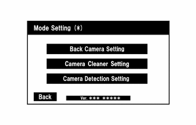(b) Camera Detection Setting
(1) Select ON or OFF on the "Camera Detection Setting" screen as necessary.
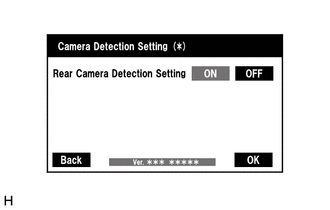HINT:
After selecting ON or OFF, return to the "Mode Setting" screen by selecting "OK" or "Back".
(c) Finish diagnostic mode.
Click here
VIDEO DEVICE CONNECTION CHECK
Click here
CALIBRATION WHEN SERVICING VEHICLE
NOTICE:
Depending on the parts that are replaced or operations that are performed during vehicle inspection or maintenance, calibration of other systems as well as the parking assist monitor system may be needed.
Click here
|
|
|